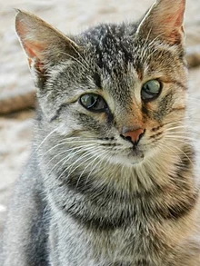

На шелковистом фоне багряно-фиолетового заката воздушной красоты пастельные оттенки слива и персика
расцветают в густой шубке маленького кота. Его мягкий, пушистый мех словно море нежности, в котором
тонут все заботы мира. Глаза этого кота — две искорки живой, игривой умности, они сверкают в
темноте,
словно две жемчужины, хранящие в себе мудрость веков и загадки ночи. Он сидит, подняв голову, словно
наблюдая за танцем звезд и луны на небесном своде, восхищенно вздыхая и загадочно улыбаясь, словно
знающий некий великий секрет вселенной. В каждом его движении — грация и элегантность, словно магия,
сплетенная из лунного света и теней ночи. Такой кот — мечта и воплощение всего прекрасного, что
скрыто в
бездонной душе природы.